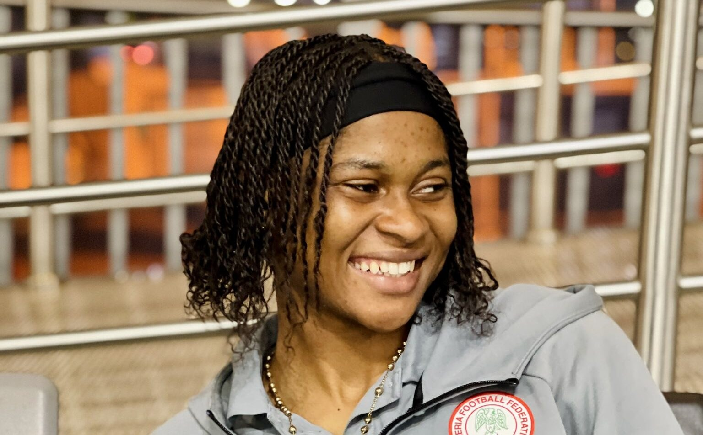

Brazil vs Nigeria: Five players who could decide crucial semi-final showdown

Nigeria’s Flamingos face one of their toughest tests at the 2026 FIFA U-17 Women’s World Cup when they meet Brazil in Wednesday’s semi-final in Morocco. A place in the final would be a first for Nigeria at this level. Akeem Busari’s side have won four consecutive matches since losing their opener to Poland, including a 3-1 victory over defending champions DPR Korea. Brazil are unbeaten and have scored 17 goals in five games.
Goalkeeper Jane Ijirigho will be central to Nigeria’s effort to contain that attack. She has made 16 saves at the tournament, including important interventions against Puerto Rico and Mexico. Brazil’s threat comes from multiple players, so Ijirigho’s reflexes and communication with her defence may be as important as the saves themselves. Helena is among the forwards Nigeria must watch closely: she scored both goals in Brazil’s 2-1 quarter-final comeback against China PR, equalising 42 seconds into the second half before scoring again in the 87th minute.
Greise Kelly is another key danger for Nigeria. The Brazil forward has three goals and five assists, the most assists recorded by any player in the competition. Her eight direct goal contributions account for 47.06 per cent of Brazil’s goals, according to tournament statistics. Nigeria will need to restrict her space and disrupt her ability to create chances for teammates. Brazil’s attack also includes Marcela Bontorim, Nicolly Manuel and Pepe, adding to the challenge of defending them.
Nigeria will look to Oluebube Umejiaku and Oluwakemi Adegbuyi for a response. Umejiaku has scored three times and won the late penalty converted by Azeezat Oduntan in the quarter-final against Venezuela. Adegbuyi has scored twice, including against DPR Korea, and offers another threat in the final third. Brazil have conceded nine goals in five matches, leaving potential openings for Nigeria if they can attack quickly and use runs behind the defence. The Flamingos’ pressing and physical energy could help disrupt Brazil, but they will need to maintain defensive discipline. Strong performances from these five players could shape Nigeria’s chance of reaching a historic first final.
Source: Premium Times